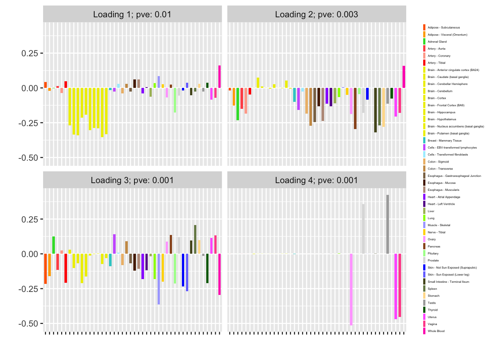
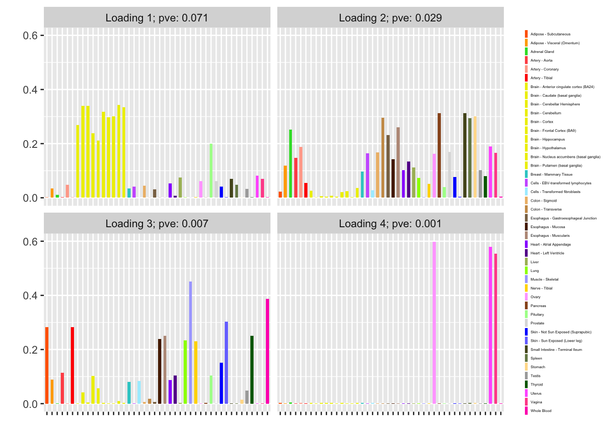

Last updated: 2018-09-25
workflowr checks: (Click a bullet for more information) ✔ R Markdown file: up-to-date
Great! Since the R Markdown file has been committed to the Git repository, you know the exact version of the code that produced these results.
✔ Environment: empty
Great job! The global environment was empty. Objects defined in the global environment can affect the analysis in your R Markdown file in unknown ways. For reproduciblity it’s best to always run the code in an empty environment.
✔ Seed:
set.seed(20180714)
The command set.seed(20180714) was run prior to running the code in the R Markdown file. Setting a seed ensures that any results that rely on randomness, e.g. subsampling or permutations, are reproducible.
✔ Session information: recorded
Great job! Recording the operating system, R version, and package versions is critical for reproducibility.
✔ Repository version: 2303a6c
wflow_publish or wflow_git_commit). workflowr only checks the R Markdown file, but you know if there are other scripts or data files that it depends on. Below is the status of the Git repository when the results were generated:
Ignored files:
Ignored: .DS_Store
Ignored: .Rhistory
Ignored: .Rproj.user/
Ignored: docs/.DS_Store
Ignored: docs/figure/.DS_Store
Untracked files:
Untracked: data/greedy19.rds
| File | Version | Author | Date | Message |
|---|---|---|---|---|
| Rmd | 2303a6c | Jason Willwerscheid | 2018-09-25 | wflow_publish(“analysis/binary_data.Rmd”) |
I repeat the previous analysis but here I treat the GTEx donation matrix as binary data. (This is probably more appropriate; it is much more natural to assume that each donor will contribute a given tissue with a particular probability than that each donor will generate samples of a given tissue such that the count of samples is distributed as a Poisson random variable.)
Here the model is \[ Y_{ij} \sim \text{Bernoulli}(p_{ij}), \] with \[ \log \left( \frac{p}{1 - p} \right) = LF'. \] As in the previous analysis, one could also put \[ \log \left( \frac{p}{1 - p} \right) = LF' + E, \] with the “errors” \(E_{ij}\) distributed i.i.d. \(N(0, \sigma^2)\).
Setting \(\eta = \log (p / (1 - p))\), one has that \[ \begin{aligned} \ell(\eta) &= \sum_{i, j} - \log (1 + e^{\eta_{ij}}) + Y_{ij} \eta_{ij} \\ \ell'(\eta) &= \sum_{i, j} -\frac{e^{\eta_{ij}}}{1 + e^{\eta_{ij}}} + Y_{ij} = \sum_{i, j} Y_{ij} - p_{ij} \\ \ell''(\eta) &= \sum_{i, j} - \frac{e^{\eta_{ij}}}{(1 + e^{\eta_{ij}})^2} = \sum_{i, j} -p_{ij}(1 - p_{ij}) \end{aligned}\]
Using the same trick as before, one obtains pseudo-data \[ X = \log \left( \frac{p^\star}{1 - p^\star} \right) + \frac{Y - p^\star}{p^\star(1 - p^\star)} \] with standard errors \[ S = \frac{1}{\sqrt{p^\star(1 - p^\star)}} \]
The objective can be calculated as the FLASH objective plus \[\sum_{i, j} Y_{ij} \log p^\star_{ij} + (1 - Y_{ij}) \log (1 - p^\star_{ij}) + \frac{1}{2}\log \left( \frac{2 \pi}{p^\star_{ij}(1 - p^\star_{ij})} \right) + \frac{(Y_{ij} - p^\star_{ij})^2}{2p^\star_{ij}(1 - p^\star_{ij})}. \]
This is largely cut and pasted from the previous analysis.
devtools::load_all("~/GitHub/flashr")
#> Loading flashr
devtools::load_all("~/GitHub/ebnm")
#> Loading ebnm
raw <- read.csv("https://storage.googleapis.com/gtex_analysis_v6/annotations/GTEx_Data_V6_Annotations_SampleAttributesDS.txt",
header=TRUE, sep='\t')
data <- raw[, c("SAMPID", "SMTSD")] # sample ID, tissue type
# Extract donor ID:
tmp <- strsplit(as.character(data$SAMPID), "-")
data$SAMPID <- as.factor(sapply(tmp, function(x) {x[[2]]}))
names(data) <- c("DonorID", "TissueType")
data <- suppressMessages(reshape2::acast(data, TissueType ~ DonorID))
missing.tissues <- c(1, 8, 9, 20, 21, 24, 26, 27, 33, 36, 39)
data <- data[-missing.tissues, ]
# Drop columns with no samples:
data <- data[, colSums(data) > 0]
# Convert to binary data:
data[data > 0] <- 1
gtex.colors <- read.table("https://github.com/stephenslab/gtexresults/blob/master/data/GTExColors.txt?raw=TRUE",
sep = '\t', comment.char = '')
gtex.colors <- gtex.colors[-c(7, 8, 19, 20, 24, 25, 31, 34, 37), 2]
gtex.colors <- as.character(gtex.colors)
# Computing objective (ELBO) -------------------------------------------
calc_obj <- function(fl, the_data, p) {
return(fl$objective +
sum(the_data * log(p) + (1 - the_data) * log(1 - p) +
0.5 * (log(2 * pi / (p * (1 - p))) +
(the_data - p)^2 / (p * (1 - p)))))
}
# Calculating pseudo-data ----------------------------------------------
calc_X <- function(the_data, p) {
return(log(p / (1 - p)) + (the_data - p) / (p * (1 - p)))
}
calc_S <- function(the_data, p) {
return(1 / sqrt(p * (1 - p)))
}
set_pseudodata <- function(the_data, p) {
return(flash_set_data(calc_X(the_data, p), S = calc_S(the_data, p)))
}
# Setting FLASH parameters ---------------------------------------------
# Initialization function for nonnegative loadings
# (but arbitrary factors):
my_init_fn <- function(Y, K = 1) {
ret = udv_svd(Y, K)
sum_pos = sum(ret$u[ret$u > 0]^2)
sum_neg = sum(ret$u[ret$u < 0]^2)
if (sum_neg > sum_pos) {
return(list(u = -ret$u, d = ret$d, v = -ret$v))
} else
return(ret)
}
get_init_fn <- function(nonnegative = FALSE) {
if (nonnegative) {
return("my_init_fn")
} else {
return("udv_svd")
}
}
get_ebnm_fn <- function(nonnegative = FALSE) {
if (nonnegative) {
return(list(l = "ebnm_ash", f = "ebnm_pn"))
} else {
return(list(l = "ebnm_pn", f = "ebnm_pn"))
}
}
get_ebnm_param <- function(nonnegative = FALSE) {
if (nonnegative) {
return(list(l = list(mixcompdist = "+uniform"),
f = list(warmstart = TRUE)))
} else {
return(list(l = list(warmstart = TRUE),
f = list(warmstart = TRUE)))
}
}
# Initializing p and running FLASH -------------------------------------
stabilize_p <- function(p) {
p[p < 1e-6] <- 1e-6
p[p > 1 - 1e-6] <- 1 - 1e-6
return(p)
}
init_p <- function(the_data, f_init) {
if (is.null(f_init)) {
return(matrix(colMeans(the_data),
nrow = nrow(the_data), ncol = ncol(the_data),
byrow = TRUE))
} else {
p <- 1 / (1 + exp(-f_init$fitted_values))
return(stabilize_p(p))
}
}
update_p <- function(fl, pseudodata, var_type) {
if (var_type == "constant") {
LF <- fl$fitted_values
X <- pseudodata$Y
S2 <- pseudodata$S^2
s2 <- 1 / fl$fit$tau[1, 1] - S2[1,1]
eta <- LF + ((1 / S2) / (1 / S2 + 1 / s2)) * (X - LF)
p <- 1 / (1 + exp(-eta))
} else { # var_type = "zero"
p <- 1 / (1 + exp(-fl$fitted_values))
}
return(stabilize_p(p))
}
greedy_iter <- function(pseudodata, f_init, niter,
nonnegative = FALSE, var_type = "zero") {
suppressWarnings(
flash_greedy_workhorse(pseudodata,
Kmax = 1,
f_init = f_init,
var_type = var_type,
ebnm_fn = get_ebnm_fn(nonnegative),
ebnm_param = get_ebnm_param(nonnegative),
init_fn = get_init_fn(nonnegative),
verbose_output = "",
nullcheck = FALSE,
maxiter = niter)
)
}
backfit_iter <- function(pseudodata, f_init, kset, niter,
nonnegative = FALSE, var_type = "zero") {
suppressWarnings(
flash_backfit_workhorse(pseudodata,
kset = kset,
f_init = f_init,
var_type = var_type,
ebnm_fn = get_ebnm_fn(nonnegative),
ebnm_param = get_ebnm_param(nonnegative),
verbose_output = "",
nullcheck = FALSE,
maxiter = niter)
)
}
run_one_fit <- function(the_data, f_init, greedy, maxiter = 200,
n_subiter = 200, nonnegative = FALSE,
var_type = "zero",
verbose = TRUE, tol = .01) {
p <- init_p(the_data, f_init)
if (greedy) {
pseudodata <- set_pseudodata(the_data, p)
fl <- greedy_iter(pseudodata, f_init, n_subiter,
nonnegative, var_type)
kset <- ncol(fl$fit$EL) # Only "backfit" the greedily added factor
p <- update_p(fl, pseudodata, var_type)
} else {
fl <- f_init
kset <- 1:ncol(fl$fit$EL) # Backfit all factor/loadings
}
# The objective can get stuck oscillating between two values, so we
# need to track the last two values attained:
old_old_obj <- -Inf
old_obj <- -Inf
diff <- Inf
iter <- 0
while (diff > tol && iter < maxiter) {
iter <- iter + 1
pseudodata <- set_pseudodata(the_data, p)
fl <- backfit_iter(pseudodata, fl, kset, n_subiter,
nonnegative, var_type)
fl$objective <- calc_obj(fl, the_data, p)
diff <- min(abs(fl$objective - old_obj),
abs(fl$objective - old_old_obj))
old_old_obj <- old_obj
old_obj <- fl$objective
p <- update_p(fl, pseudodata, var_type)
if (verbose) {
message("Iteration ", iter, ": ", fl$objective)
}
}
return(fl)
}
flash_fit <- function(the_data, n_subiter, nonnegative = FALSE,
var_type = "zero", maxiter = 100, tol = .01,
verbose = FALSE) {
fl <- run_one_fit(the_data, f_init = NULL, greedy = TRUE,
maxiter = maxiter, n_subiter = n_subiter,
nonnegative = nonnegative, var_type = var_type,
verbose = verbose)
old_obj <- fl$objective
# Keep greedily adding factors until the objective no longer improves:
diff <- Inf
while (diff > tol) {
fl <- run_one_fit(the_data, fl, greedy = TRUE,
maxiter = maxiter, n_subiter = n_subiter,
nonnegative = nonnegative, var_type = var_type,
verbose = verbose)
diff <- fl$objective - old_obj
old_obj <- fl$objective
}
# Now backfit the whole thing:
fl <- run_one_fit(the_data, fl, greedy = FALSE,
maxiter = maxiter, n_subiter = n_subiter,
nonnegative = nonnegative, var_type = var_type,
verbose = verbose)
return(fl)
}I fit factors using var_type = "zero" (as in the previous analysis, var_type = "constant" gives the same result):
fl_zero <- flash_fit(data, 1, var_type = "zero")
fl_zero$objective
#> [1] -12075.66
plot(fl_zero, plot_loadings = TRUE, loading_colors = gtex.colors,
loading_legend_size = 3, plot_scree = FALSE)
Nonnegative loadings are not as compelling (but I’m not sure that they make much sense in this scenario anyway):
fl_nonneg <- flash_fit(data, 1, var_type = "zero", nonnegative = TRUE)
fl_nonneg$objective
#> [1] -12448.13
plot(fl_nonneg, plot_loadings = TRUE, loading_colors = gtex.colors,
loading_legend_size = 3, plot_scree = FALSE)
sessionInfo()
#> R version 3.4.3 (2017-11-30)
#> Platform: x86_64-apple-darwin15.6.0 (64-bit)
#> Running under: macOS High Sierra 10.13.6
#>
#> Matrix products: default
#> BLAS: /Library/Frameworks/R.framework/Versions/3.4/Resources/lib/libRblas.0.dylib
#> LAPACK: /Library/Frameworks/R.framework/Versions/3.4/Resources/lib/libRlapack.dylib
#>
#> locale:
#> [1] en_US.UTF-8/en_US.UTF-8/en_US.UTF-8/C/en_US.UTF-8/en_US.UTF-8
#>
#> attached base packages:
#> [1] stats graphics grDevices utils datasets methods base
#>
#> other attached packages:
#> [1] ebnm_0.1-15 flashr_0.6-2
#>
#> loaded via a namespace (and not attached):
#> [1] Rcpp_0.12.18 pillar_1.2.1 plyr_1.8.4
#> [4] compiler_3.4.3 git2r_0.21.0 workflowr_1.0.1
#> [7] R.methodsS3_1.7.1 R.utils_2.6.0 iterators_1.0.9
#> [10] tools_3.4.3 testthat_2.0.0 digest_0.6.15
#> [13] tibble_1.4.2 evaluate_0.10.1 memoise_1.1.0
#> [16] gtable_0.2.0 lattice_0.20-35 rlang_0.2.0
#> [19] Matrix_1.2-12 foreach_1.4.4 commonmark_1.4
#> [22] yaml_2.1.17 parallel_3.4.3 withr_2.1.1.9000
#> [25] stringr_1.3.0 roxygen2_6.0.1.9000 xml2_1.2.0
#> [28] knitr_1.20 REBayes_1.2 devtools_1.13.4
#> [31] rprojroot_1.3-2 grid_3.4.3 R6_2.2.2
#> [34] rmarkdown_1.8 reshape2_1.4.3 ggplot2_2.2.1
#> [37] ashr_2.2-13 magrittr_1.5 whisker_0.3-2
#> [40] backports_1.1.2 scales_0.5.0 codetools_0.2-15
#> [43] htmltools_0.3.6 MASS_7.3-48 assertthat_0.2.0
#> [46] softImpute_1.4 colorspace_1.3-2 labeling_0.3
#> [49] stringi_1.1.6 Rmosek_7.1.3 lazyeval_0.2.1
#> [52] doParallel_1.0.11 pscl_1.5.2 munsell_0.4.3
#> [55] truncnorm_1.0-8 SQUAREM_2017.10-1 R.oo_1.21.0This reproducible R Markdown analysis was created with workflowr 1.0.1